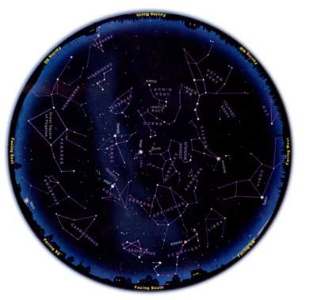

The brilliant white star Vega shines high overhead late these warm nights. Golden yellow Arcturus blazes in the western sky. And if you live under deep darkness, you can see vast star clouds of the Milky Way silently boiling up in the south.
You can learn how to navigate the universe above your back yard. Here's how:
Check the times and dates at the top of the page. Take this map out under the night sky within an hour or so of the right time. Bring a flashlight to read the map. Secure a piece of red paper over the lens of the flashlight with a rubber band; the dim red light won't spoil your night vision.
Outside, you need to know which direction you're facing. (If you're unsure, just note where the Sun sets; that's west.) Hold the map in front of you, and look at the yellow labels around the edge. Turn the map around so the label for the direction you're facing is right-side up. The curved edge is the horizon; the stars above it on the map now match the stars in front of you. The farther up from the map's edge they appear, the higher they'll be in the sky.
The center of the map is the zenith (overhead), so a star halfway from the edge of the map to the center will appear halfway from straight ahead to directly above you. Ignore the parts of the map above horizons you're not facing.
Let's give it a try! Turn the map around and hold it so its northwest horizon (labeled "Facing NW") is right-side up. Halfway from there to the center is the Big Dipper in Ursa Major. It's hanging with its bowl down. Go out at the right time, face northwest, look about halfway up the sky - and there it is!
Look for the brightest stars and constellations first; light pollution or moonlight may wash out the fainter ones. And remember that star patterns in the sky will look a lot bigger than they do here on paper.
This summer and fall we get a special visitor: the bright planet Mars! During July and August, Mars blazes fiery orange in the constellation Aquarius, low above the east-southeast horizon on the map. In late August, Mars passes unusually close to Earth.
Customize a night sky map for your location at SkyandTelescope.com .
Mother Earth News
|
 Sky & Telescope Magazine |
|
|